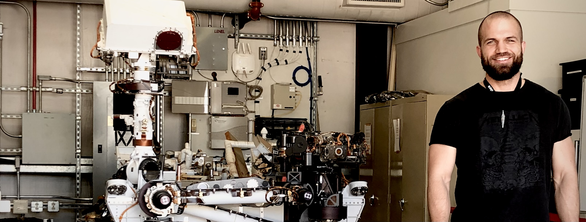

Marlin P. Strub
Roboticist and C++ enthusiast
| Home | News | Research | Publications | About |
About
I'm a Robotics Technologist at NASA/JPL, where I currently lead the path-planning efforts for a snake-like robot called Exobiology Extant Life Surveyor (EELS) and for the Sample Recovery Helicopters (SRH) ground mobility control.

Figure 1: Me next to Curiosity's engineering model.
I hold a PhD in Engineering Science from the University of Oxford, where I was a member of the Estimation, Search, and Planning (ESP) Group led by Dr. Jonathan D. Gammell. My research at Oxford focused on designing and implementing path-planning algorithms that leverage different sources of information to improve planning performance for complex systems in robotics and beyond. I also hold an MSc in Robotics, Systems, and Control and a BSc in Mechanical Engineering from ETH Zürich. If you're interested in my work, please take a look at my publications. All of the algorithms I designed at ESP are publicly available in the Open Motion Planning Library (OMPL) under a BSD license.
A detailed CV can be downloaded by clicking on this link.